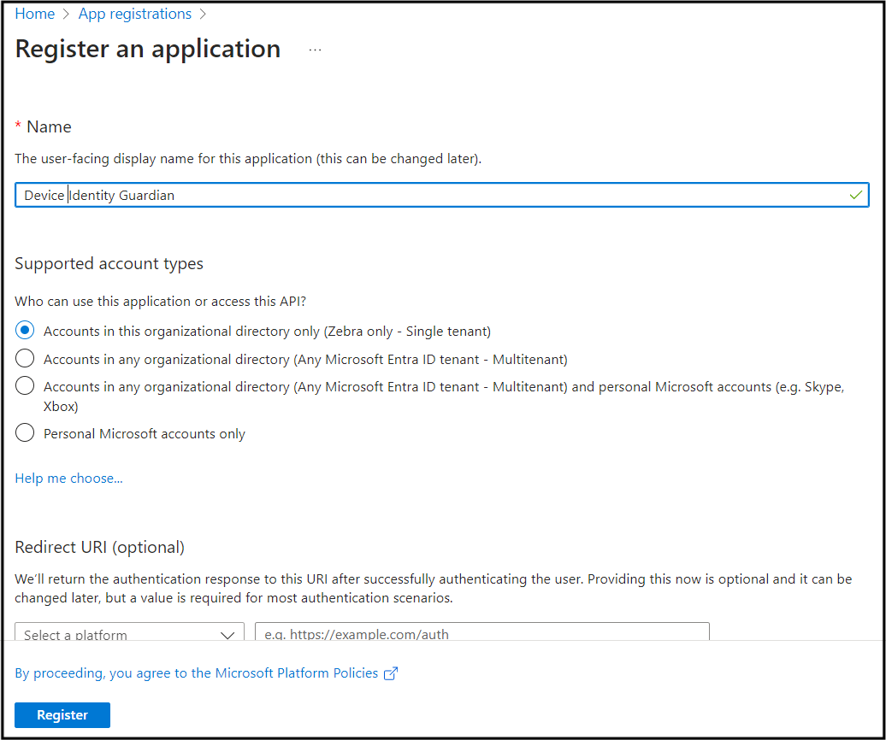
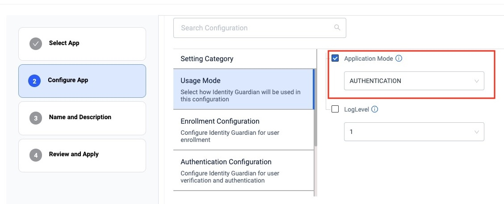
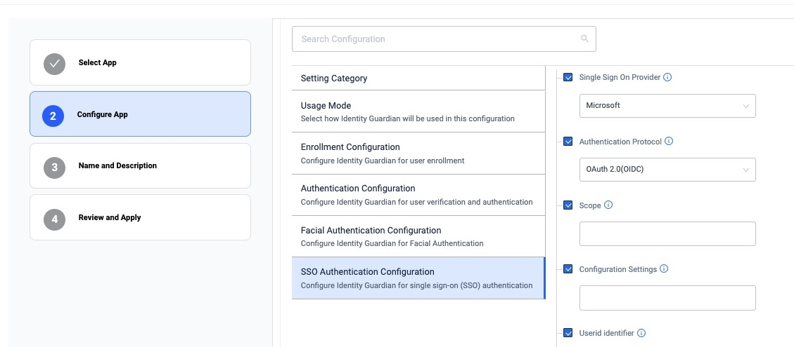

Overview
Through either Zebra DNA Cloud or Enterprise Mobility Management (EMM), administrators establish usage policies and controls for Identity Guardian via Managed Configurations. This enables companies to personalize device restrictions and access. Additionally, administrators gain insight into usage details such as user sign-in/sign-out events and usage times through a dashboard, promoting user accountability.
Identity Guardian streamlines application authentication by integrating with the identity provider (IdP). Users need only to sign in once with single sign-on (SSO), which then handles subsequent application sign-ins, streamlining the process.
It is necessary to install Identity Guardian app on the devices.
Requirements
Identity Guardian requirements:
- Zebra devices running Android 11 or higher are supported. See Zebra Support Portal for the supported devices.
- For biometric authentication, a front-facing camera is required on the device
- Licenses:
- An Identity Guardian license is required for advanced features including facial biometric authentication, Single Sign-On (SSO) support and device API support. See Licensing.
- Zebra Professional-series devices require a Mobility DNA Enterprise license for basic functionality
SSO requirement:
- Support is available for integration with both Microsoft Entra ID (formerly Azure Active Directory) and PingID platforms with OAUTH and OAUTH+OIDC authentication protocols.
Download
Download and install Identity Guardian from the Zebra support portal.
SSO
Identity Guardian integrates with identity providers (IdPs) simplifying authentication by only requiring users to log in once, and then leveraging single sign-on (SSO) to streamline the process. This single login grants users to gain access to multiple applications, eliminating the need to keep track of multiple logins for each app. There are 2 types of IdPs supported: Microsoft Entra ID and PingID.
Microsoft Entra ID
This section provides guidance to integrate Identity Guardian with Microsoft Entra ID (formerly Azure Active Directory):
I. Register Zebra Identity Guardian
II. Configure SSO for Shared Devices
III. Configure Microsoft Authenticator App
IV. Configure Zebra Identity Guardian App
I. Register Zebra Identity Guardian
To establish a trust relationship between Identity Guardian and the Microsoft identity platform, register Zebra Identity Guardian as an Android application in Microsoft Entra ID (IdP). Consult Microsoft's documentation for guidance on registering an application with the Microsoft identity platform.
Please ensure to enter or select the following when registering Identity Guardian:
- For the supported account type, select "Single tenant." 
- When configuring the Android app, enter the following:
- Package name: com.zebra.mdna.els
- Signature hash: KqmK9tYXpw+eW2lke7US3iG9EAQ=

- Download the code sample and save the file as
auth_config_single_account.json. This will be used in a subsequent step to configure the app settings on the device.
II. Configure SSO for Shared Devices
If Microsoft Authenticator is used for single sign-on (SSO) on shared devices, it is possible to integrate a third-party device compliance partner solution with Microsoft Intune. This allows for the collection of device compliance data in conjunction with Intune's own compliance results. The combined data can be used to formulate access policies, providing enhanced protection for your organization and its data. Examples of third-party device compliance partners include solutions such as SOTI MobiControl, VMware Workspace ONE UEM (formerly AirWatch), and others. Consult your EMM or Microsoft's documentation for guidance on adding a third-party device compliance partner in Intune.
III. Configure Microsoft Authenticator App
For optimal use of shared device mode with SSO through Microsoft Authenticator, ensure the Microsoft Authenticator app is installed on the devices. This facilitates automatic SSO single sign-in and single sign-out across apps on the device.
To install and configure Microsoft Authenticator app:
Download and install the Microsoft Authenticator app from Google Play via an EMM, such as SOTI MobiControl or VMware Workspace ONE UEM.
In the EMM, enable Shared Device Mode and enter the Shared Device Mode Tenant Identifier (obtained from the Microsoft Entra ID).
<img alt="image" style="height:400px" src="managed-config-shared-device.png" /> _SOTI MobiControl Managed App Config_
IV. Configure Zebra Identity Guardian App
To enable user access to the device through SSO, install and set up Identity Guardian on the devices:
- Deploy and install Zebra Identity Guardian app on the devices.
- Launch the app using an EMM. This step must be performed at least once.
- Enter the Managed Configuration settings for the app via your EMM:
- Select the application mode:
- Application Mode: Authentication  zDNA Cloud Managed Config
- Configure the Verification Setup to validate the user access:
- Primary Authentication Factor: SSO
- Secondary Authentication Factor: [Select FACE, PASSCODE, SSO or NONE]
- Fallback Authentication Factor: [Select FACE, PASSCODE, NONE, SSO or ADMIN BYPASS PASSCODE]
- Primary Authentication Timeout: [Enter value in ms, e.g. "300000"]
- Fallback Authentication Timeout: [Enter value in ms, e.g. "300000"]
 zDNA Cloud Managed Config
zDNA Cloud Managed Config
- Configure the Lock-screen Event options:
- On Unlock:
- Verification Setup: [Enter the desired authentication scheme, e.g. "Verification Setup1"]
- On Reboot:
- Verification Setup: [Enter the desired authentication scheme, e.g. "Verification Setup1"]
- On AC power connected:
- Verification Setup: [Enter the desired authentication scheme, e.g. "Verification Setup1"]
- On AC power disconnected:
- Verification Setup: [Enter the desired authentication scheme, e.g. "Verification Setup1"]
- On device manual check in:
- Verification Setup: [Enter the desired authentication scheme, e.g. "Verification Setup1"]
- On user change: Verification Setup: - Verification Setup: [Enter the desired authentication scheme, e.g. "Verification Setup1"]
 zDNA Cloud Managed Config
zDNA Cloud Managed Config
- Configure the SSO Authentication Configuration for the app to communicate with Microsoft SSO to authenticate the user: - Single Sign On Provider: Microsoft - Authentication Protocol: OAuth 2.0 (OIDC) - Scope: [Enter the string based on the SSO server settings] - Configuration Settings: [Enter the following string, but replace "client_id" and "authority_url" with your values from
auth_config_single_account.jsonfile downloaded from step I.]
 zDNA Cloud Managed Config{ "client_id" : "[ENTER YOUR CLIENT ID]", "authorization_user_agent" : "DEFAULT", "redirect_uri" : "msauth://com.zebra.mdna.els/KqmK9tYXpw%2BeW2lke7US3iG9EAQ%3D", "account_mode" : "SINGLE", "broker_redirect_uri_registered": true, "shared_device_mode_supported": true, "authorities" : [ { "type": "AAD", "authority_url": "[ENTER YOUR AUTHORITY URL]" } ] }
- Select the application mode:
- If mapping the SSO response to application-specific roles, enter the following (see Managed Configurations for more information):
- Configuration Role Identification - Enables the recognition and mapping of the Single Sign-On (SSO) response to application-specific roles. Click Add Role Identifier as needed. - Role Identifier - Establishes links between roles in SSO responses and their corresponding roles within the Identity Guardian app. - Identity Guardian Role Name - Enter the Identity Guardian user role to be assigned based on SSO response during user sign-in - Key-value Pair for Role Assignment - Add one or more SSO key-value pairs to identify and map users to a predefined Identity Guardian user role. Click Add SSO Key-Value Pair as needed. - SSO Key-Value Pair - Choose whether the SSO response, which contains the user key and values, should be mapped to a corresponding user role in Identity Guardian - SSO Key - Enter the SSO key to map it to an Identity Guardian role. - SSO Value - Enter the SSO value(s) to map to the Identity Guardian role. Use commas to separate multiple entries.
 zDNA Cloud Managed Config
zDNA Cloud Managed Config
- Configuration Role Identification - Enables the recognition and mapping of the Single Sign-On (SSO) response to application-specific roles. Click Add Role Identifier as needed. - Role Identifier - Establishes links between roles in SSO responses and their corresponding roles within the Identity Guardian app. - Identity Guardian Role Name - Enter the Identity Guardian user role to be assigned based on SSO response during user sign-in - Key-value Pair for Role Assignment - Add one or more SSO key-value pairs to identify and map users to a predefined Identity Guardian user role. Click Add SSO Key-Value Pair as needed. - SSO Key-Value Pair - Choose whether the SSO response, which contains the user key and values, should be mapped to a corresponding user role in Identity Guardian - SSO Key - Enter the SSO key to map it to an Identity Guardian role. - SSO Value - Enter the SSO value(s) to map to the Identity Guardian role. Use commas to separate multiple entries.
- See Managed Configurations to configure any other non-SSO settings.
- Deploy the Managed Configurations to the devices through your EMM.
When a device gets updated with the new configurations, Zebra Identity Guardian activates the lock screen. The user is then required to authenticate themselves using Single Sign-On (SSO) to gain access to the device. See User Guide for more information.
PingID
This section provides guidance to integrate Identity Guardian with PingID.
To enable user access to the device through SSO, install and set up Identity Guardian on the devices:
- Deploy and install Zebra Identity Guardian app on the devices.
- Launch the app using an EMM. This step must be performed at least once.
- Enter the Managed Configuration settings for the app via your EMM:
- Select the application mode:
- Application Mode: Authentication zDNA Cloud Managed App Config
- Configure the Verification Setup to validate the user access:
- Primary Authentication Factor: SSO
- Secondary Authentication Factor: [Select FACE, PASSCODE, or NO_COMPARISON]
- Fallback Authentication Factor: [Select FACE, PASSCODE, NONE, SSO or ADMIN BYPASS PASSCODE]
- Primary Authentication Timeout: [Enter value in ms, e.g. "300000"]
- Fallback Authentication Timeout: [Enter value in ms, e.g. "300000"]
zDNA Cloud Managed Config
- Configure the Lock-screen Event options:
- On Unlock:
- Verification Setup: [Enter the desired authentication scheme, e.g. "Verification Setup1"]
- On Reboot:
- Verification Setup: [Enter the desired authentication scheme, e.g. "Verification Setup1"]
- On AC power connected:
- Verification Setup: [Enter the desired authentication scheme, e.g. "Verification Setup1"]
- On AC power disconnected:
- Verification Setup: [Enter the desired authentication scheme, e.g. "Verification Setup1"]
- On device manual check in:
- Verification Setup: [Enter the desired authentication scheme, e.g. "Verification Setup1"]
- On user change: Verification Setup: - Verification Setup: [Enter the desired authentication scheme, e.g. "Verification Setup1"]
zDNA Cloud Managed Config
- Configure the SSO Authentication Configuration: - Single Sign On Provider: PingId - Authentication Protocol: OAuth 2.0 (OIDC) - Scope: openid email profile - Userid Identifier: [Specify the user key for identifying the signed-in user] - Configuration Settings: [Enter the specified string, but replace the following values with those from your own SSO response: logoutURL, logoutURL, tokenURL, authorizationURL, clientId, userInfoUrl]
{ "redirectURI" : "com.zebra.mdna.els:/loginComplete", "logoutURL" : "[enter your logout URL]", "logoutURL" : "[enter your revoke URL]", "tokenURL" : "[enter your token URL]", "authorizationURL" : "[enter your authorization URL]", "clientAuthType" : 0, "clientId" : "[enter your clientID]", "certificatePhrase" : "", "userInfoUrl" : "[enter your serInfo URL]", "certificate" : "" } zDNA Cloud Managed App Config
zDNA Cloud Managed App Config
- Select the application mode:
- If mapping the SSO response to application-specific roles, enter the following (see Managed Configurations for more information):
- Configuration Role Identification - Enables the recognition and mapping of the Single Sign-On (SSO) response to application-specific roles. Click Add Role Identifier as needed. - Role Identifier - Establishes links between roles in SSO responses and their corresponding roles within the Identity Guardian app. - Identity Guardian Role Name - Enter the Identity Guardian user role to be assigned based on SSO response during user sign-in - Key-value Pair for Role Assignment - Add one or more SSO key-value pairs to identify and map users to a predefined Identity Guardian user role. Click Add SSO Key-Value Pair as needed. - SSO Key-Value Pair - Choose whether the SSO response, which contains the user key and values, should be mapped to a corresponding user role in Identity Guardian - SSO Key - Enter the SSO key to map it to an Identity Guardian role. - SSO Value - Enter the SSO value(s) to map to the Identity Guardian role. Use commas to separate multiple entries.
zDNA Cloud Managed Config
- Configuration Role Identification - Enables the recognition and mapping of the Single Sign-On (SSO) response to application-specific roles. Click Add Role Identifier as needed. - Role Identifier - Establishes links between roles in SSO responses and their corresponding roles within the Identity Guardian app. - Identity Guardian Role Name - Enter the Identity Guardian user role to be assigned based on SSO response during user sign-in - Key-value Pair for Role Assignment - Add one or more SSO key-value pairs to identify and map users to a predefined Identity Guardian user role. Click Add SSO Key-Value Pair as needed. - SSO Key-Value Pair - Choose whether the SSO response, which contains the user key and values, should be mapped to a corresponding user role in Identity Guardian - SSO Key - Enter the SSO key to map it to an Identity Guardian role. - SSO Value - Enter the SSO value(s) to map to the Identity Guardian role. Use commas to separate multiple entries.
- See Managed Configurations to configure any other non-SSO settings.
- Deploy the Managed Configurations to the devices through your EMM.
When a device gets updated with the new configurations, Zebra Identity Guardian activates the lock screen. The user is then required to authenticate themselves using Single Sign-On (SSO) to gain access to the device. See User Guide for more information.
Secure Setup for Faster Logins
Identity Guardian can simplify Single Sign-On (SSO) logins by prompting users for SSO authentication only once, post device enrollment. For frequent situations like device lock, it offers efficient options like biometric or pin-based access, eliminating the need for repeated SSO logins. It maintains the original SSO session's integrity, ensuring exclusive user access and simultaneous logout from all apps, creating a secure and streamlined login process.
To implement this authentication strategy, follow the procedure below based on whether the device model is shared or personally assigned.
Shared Devices
Administrator setup - refer to Managed Configurations:
- Set SSO authentication in the following managed configurations:
- Usage Mode
- Application Mode: Authentication
- Authentication Configuration
- User Verification Methods
- Verification Setup1: [Select or enter all desired options and include SSO as one of the authentication factors.]
- Lock-screen Event Options
- On user change: [Select the verification that includes SSO authentication, e.g. Verification Setup1]
- User Verification Methods
- Usage Mode
- For the rest of the following Lock-screen Event Options, select the verification that does not include SSO authentication, e.g. Verification Setup2 (includes face or passcode):
- On Unlock
- On Reboot
- On AC Power Connected
- On AC Power Disconnection
- In Authentication Configuration, set the following to false under Force Logout Options:
- On Lock
- On Reboot
- On AC Power Connected
- On AC Power Disconnected
End user authentication:
- Enroll the user. Make sure to enter the SSO user ID in the Employee ID field.
- Once the enrollment process is complete, the user is required to authenticate themselves on the device by scanning their user barcode once.
- If the scanned barcode matches with the enrolled user, the SSO session remains active. For subsequent logins, the user is prompted to authenticate via facial biometrics or user passcode, depending on the setup by the administrator.
- If the scanned barcode does not match with the enrolled user, it prompts for SSO credentials since an “On user change” event occurred. These SSO credentials remain active on the device.
- After the user authenticates, the user is no longer required to re-enter their SSO credentials unless one of the following occurs:
- The user logs out manually from the device
- The user is automatically logged out of the device if any of the Force Logout Options are met from Authentication Configuration in the managed configurations.
- The SSO session times out.
Personally Assigned Devices
Administrator setup - refer to Managed Configurations:
- Set SSO authentication in the following managed configurations:
- Usage Mode
- Application Mode: Personally Assigned
- Authentication Configuration
- User Verification Methods
- Verification Setup1: [Select or enter all desired options and include SSO as one of the authentication factors.]
- Lock-screen Event Options
- On user change: [Select the verification that includes SSO authentication, e.g. Verification Setup1]
- User Verification Methods
- Usage Mode
- For the rest of the following Lock-screen Event Options, select the verification that does not include SSO authentication, e.g. Verification Setup2 (includes face or passcode):
- On Unlock
- On Reboot
- On AC Power Connected
- On AC Power Disconnection
- In Authentication Configuration, set the following to false under Force Logout Options:
- On Lock
- On Reboot
- On AC Power Connected
- On AC Power Disconnected
End user authentication:
- Enroll the user. Make sure to enter the SSO user ID in the Employee ID field.
- Once the enrollment process is complete, the user is required to authenticate themselves on the device by facial biometrics or passcode entry once. If successful, the SSO session remains active.
- After the user authenticates, the user is no longer required to re-enter their SSO credentials unless one of the following occurs:
- The user logs out manually from the device
- The user is automatically logged out of the device if any of the Force Logout Options are met from Authentication Configuration in the managed configurations.
- The SSO session times out.